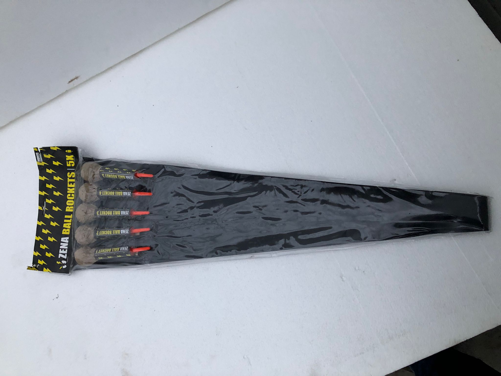
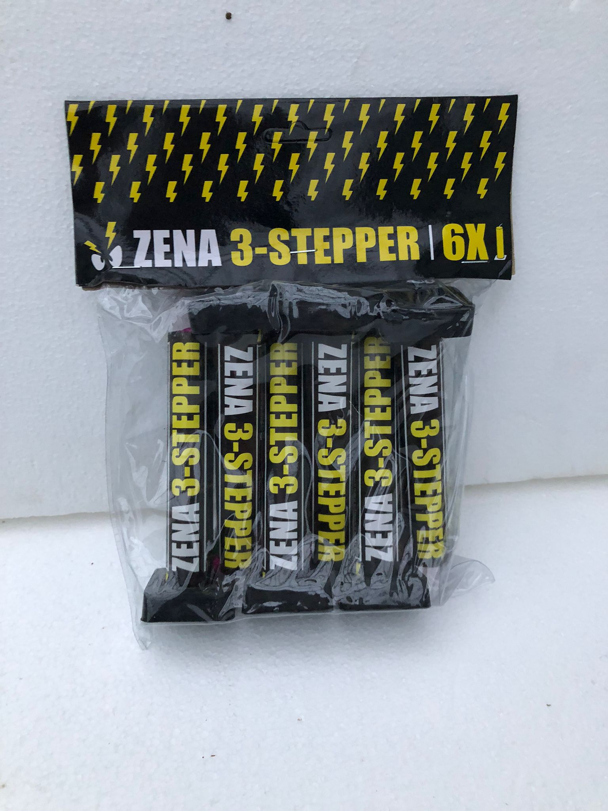

Zena Ball Rockets
Met deze kleine maar
Productinformatie
- Aantal Schoten
- Effectbreedte
- Effecthoogte
- Effecttijd
- Kruitgewicht
- 5
- 8-10 m
- 40 m
- 5 sec
- 173,5 gr

Zena 3 Stepper
De Zena 3 stepper is een prachtige fluitende fontein die ook mooi te bezichtigen is voor de niet zo
Productinformatie
- Aantal Schoten
- Effectbreedte
- Effecthoogte
- Effecttijd
- Kruitgewicht
- 1
- 3 m
- 3-5 m
- 10 sec
- 96 gr